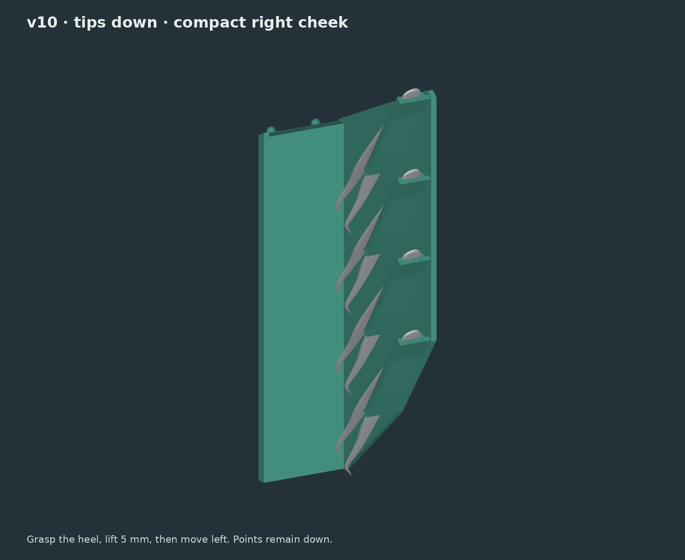
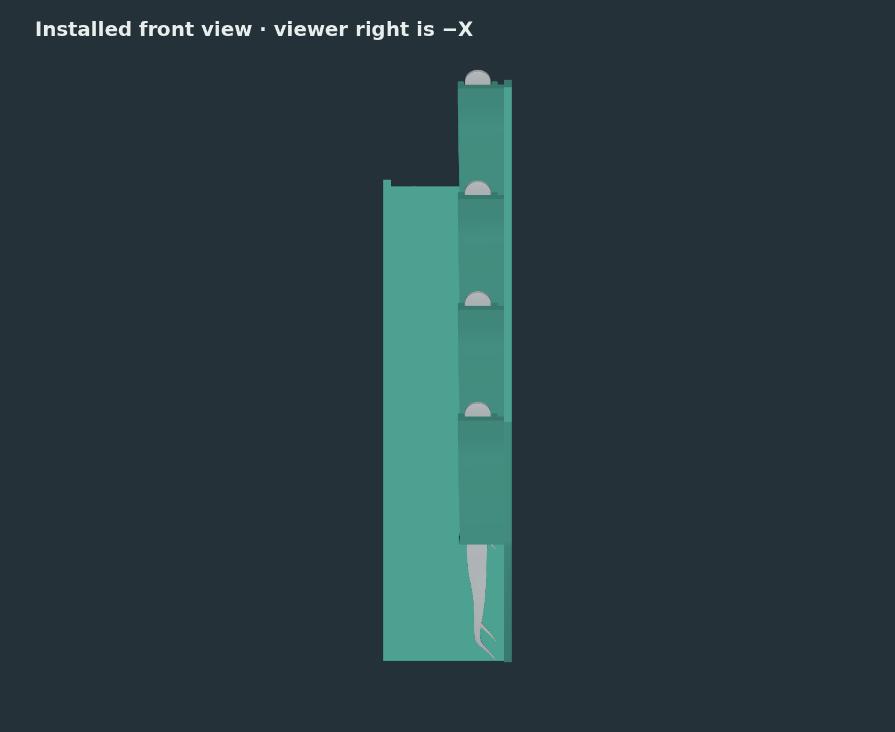
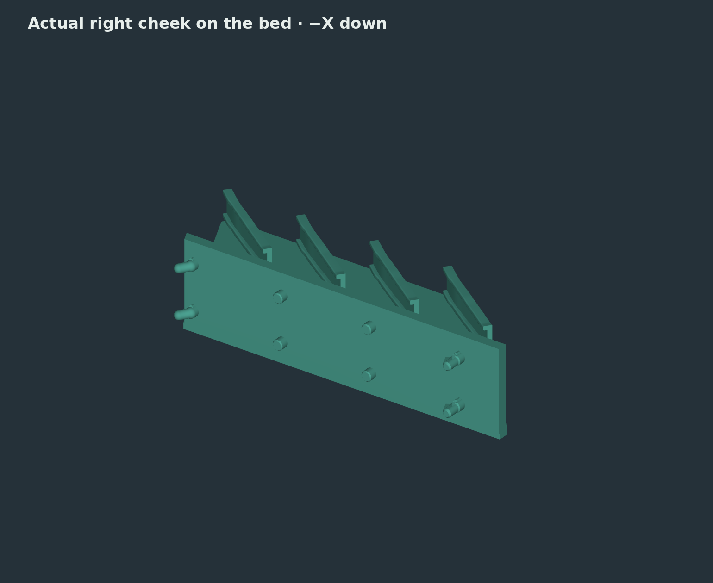
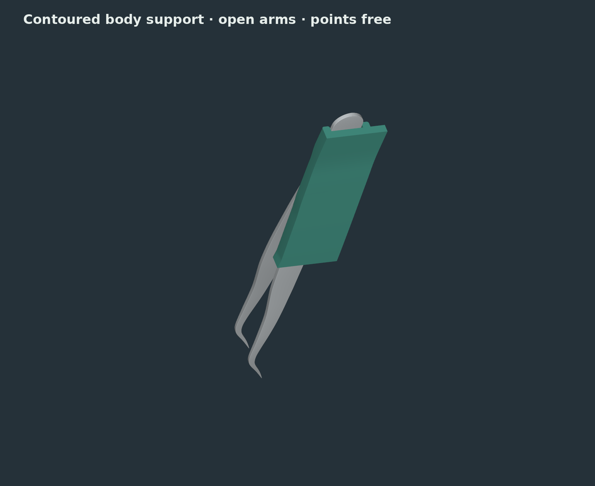
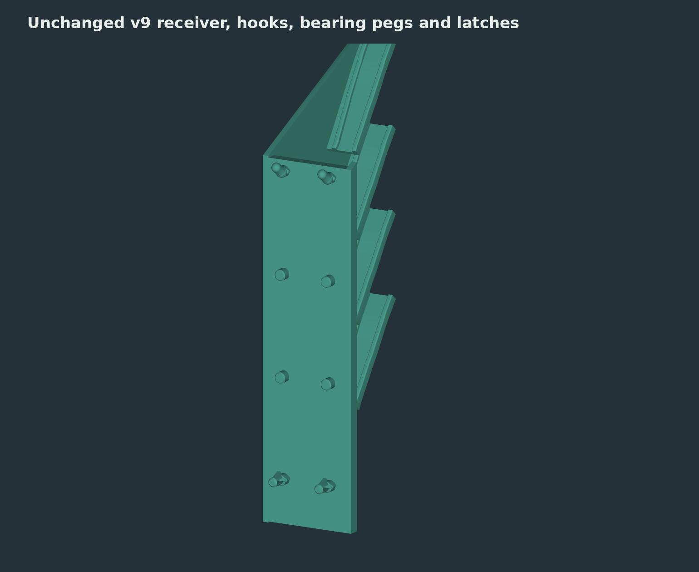

v10 · development build · four slots · solid right cheek
Tips down. A closer, lighter layout.
The cradles sit beside the right cheek, so their floors join directly into it. The broad support blocks are gone. The cheek stays solid and flat for printing, while the long body guides support the lower arm and leave the upper arm free.
Grasp the heel, lift 5 mm, then move left 30 mm. Reverse that path to insert. The points stay down throughout.

Print the single throat first
Hold the coupon at the station’s 40° incline and check seating, lateral play and the lift-and-left motion with your actual tweezer.
Prototype fit; not yet physically tested. All four slots repeat the supplied 122.76 mm bent tweezer. The close side allowance is 0.08 mm per edge; the aft and lower-face allowances are 0.35 mm. Clear supports and burrs before trying the real tool.
Rotate the actual model

The right cheek is on your right when facing the mounted station.

The print STL already lies on that solid cheek. The projecting pegs need local supports.

Body support and rounded low rails; the points have no floor or stop beneath them.

The v9 mounting interface is retained.
What changed from v9
| Solid model volume | 379.1 → 102.8 cm³ · 72.9% reduction |
|---|---|
| Cradle placement | Beside the right cheek · heels 12 mm closer to the board and 6 mm lower |
| Print bounds | 221 × 103.02 × 48.8 mm · right cheek on the bed |
| Cheek and throat | 3 mm continuous cheek · 58 mm contoured support · 19 mm closer side guidance |
| Tool spacing and tilt | 42 mm between slots · 40° incline |
| Mounting interface | Same v9 receiver and pegs · 48.8 mm width · two mounting columns |
The reduction compares CAD volume. Sliced filament savings depend on infill and supports. These exports are print-preparation inputs; inspect toolpaths with your intended printer and filament settings.
CAD and closed-mesh checks pass. All four nominal insertion/removal paths clear the holder and neighboring tools; the point region has at least 3.02 mm clearance at rest. These geometry checks do not establish printed fit, spring behavior or wear.
Dimensions and checks · Build and fit notes · Previous v9 development build · Editable source